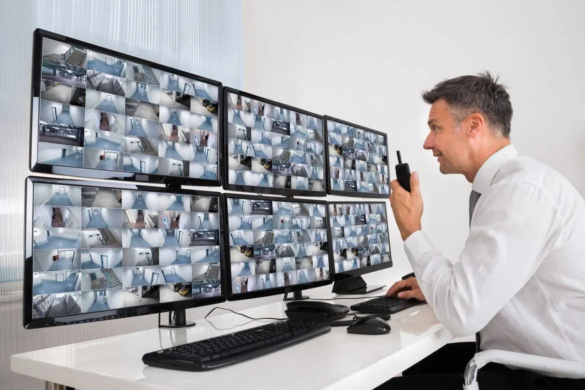
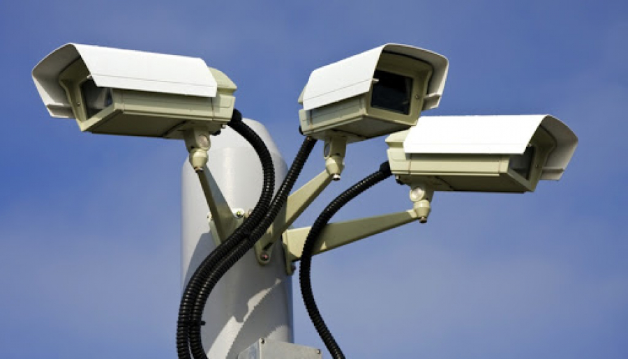

Erta mexanik CCTV tizimi 1927 yil iyun oyida rus fizigi Léon Theremin tomonidan ishlab chiqilgan (qarang . Sovet Ittifoqidagi televidenie). Dastlab Mehnat va Mudofaa Soveti tomonidan talab qilingan tizim qoʻlda boshqariladigan skanerlash-uzatuvchi kamera va simsiz qisqa toʻlqinli uzatuvchi va qabul qilgichdan iborat boʻlib, yuz chiziqli oʻlchamlari. Kliment Voroshilov qoʻmondonligi ostida Terminning videokuzatuv tizimi Iosif Stalin , Semyon Budyonniy va Sergo Orjonikidzega koʻrsatildi va Moskva Kremlining hovlisiga yaqinlashib kelayotgan mehmonlarni kuzatish uchun oʻrnatildi.[8] Yana bir dastlabki CCTV tizimi Siemens AG tomonidan 1942 yilda fashistlar Germaniyasining Peenemünde shahridagi VII sinov stendida V-2 raketalarining uchirilishini kuzatish uchun oʻrnatildi . AQSHda birinchi tijorat yopiq elektron televizion tizim 1949 yilda Vericon deb nomlangan. Vericon haqida juda kam narsa maʼlum, faqat u hukumat ruxsatini talab qilmaydi deb eʼlon qilingan
Eng qadimgi video kuzatuv tizimlari doimiy monitoringni oʻz ichiga olgan, chunki maʼlumotlarni yozib olish va saqlashning hech qanday usuli yoʻq edi. G‘altakdan g‘altakgacha bo‘lgan ommaviy axborot vositalarining rivojlanishi kuzatuv tasvirlarini yozib olish imkonini berdi. Bu tizimlar magnit lentalarni qo‘lda o‘zgartirishni talab qildi, bu ko‘p vaqt talab qiladigan, qimmat va ishonchsiz jarayon bo‘lib, operator lentani magnitafondan tortib oluvchi g‘altakga qo‘lda o‘tkazishi kerak edi. Bu kamchiliklar tufayli videokuzatuv keng tarqalmagan. Videomagnitofon texnologiyasi 1970-yillarda paydo boʻldi, bu maʼlumotlarni yozib olish va oʻchirishni osonlashtirdi, videokuzatuvdan foydalanish keng tarqaldi. 1990-yillarda raqamli multiplekslash ishlab chiqildi, bu bir vaqtning oʻzida bir nechta kameralarni yozib olish, shuningdek, vaqt oraligʻi va faqat harakatni yozish imkonini beradi. Bu vaqt va pulni tejaydi, bu esa keyinchalik CCTVdan foydalanishning koʻpayishiga olib keldi. Yaqinda CCTV texnologiyasi Internetga asoslangan mahsulotlar va tizimlarga oʻtish va boshqa texnologik ishlanmalar bilan yaxshilandi.
Yopiq elektron televizor professional boks va professional kurash kabi sport turlari va 1964 yildan 1970 yilgacha Indianapolis 500 avtomobil poygasi uchun pullik teatr televideniesi shakli sifatida ishlatilgan . Boks bo‘yicha teleko‘rsatuvlar jonli efirda ko‘rsatilgan maydonlarda, asosan teatrlarda, tomoshabinlar jangni jonli ko‘rish uchun chiptalar to‘lagan. Yopiq telekoʻrsatuv bilan birinchi jang 1948 -yilda Jo Lui va Jo Uolkottga qarshi jang boʻlgan. Yopiq elektron koʻrsatuvlar 1960 va 1970-yillarda Muhammad Ali bilan mashhur boʻlgan, 1974-yilda butun dunyo boʻylab 50 million CCTV tomoshabinlarini jalb qilgan „Jungldagi shovqin“ jangi va 1975-yilda " Maniladagi Thrilla " butun dunyo boʻylab 100 million CCTV tomoshabinini jalb qildi. 1985 yilda WrestleMania I professional kurash shousi boʻlib oʻtdi. Ushbu sxema bilan bir milliondan ortiq tomoshabin tomonidan koʻrilgan. [23] 1996 yilning oxirida Xulio Sezar Chaves va Oskar De La Xoya oʻrtasidagi boks jangini 750 000 tomoshabin tomosha qilgan. Garchi yopiq elektron televizor asta-sekin tomosha uchun pullik uy kabel televideniesiga almashtirilgan boʻlsa-da 1980 va 1990-yillarda, u bugungi kunda ham koʻpchilik mukofot shoulari va koʻpchilik joylarga jonli efirga uzatiladigan, lekin tarmoq televideniesida efirga uzatilmaydigan va keyinchalik translyatsiya qilish uchun qayta tahrirlangan boshqa tadbirlar uchun qoʻllaniladi. Mari Van Brittan Braun birinchi boʻlib CCTV uy xavfsizlik tizimini yaratdi va patentladi, uning texnologiyasining aksariyati bugungi kunda ham uy xavfsizlik tizimlarida qoʻllaniladi (AQSh Patenti 3,482,037). 1968-yil sentabr oyida Nyu-York shtatining Olean shahri AQShda jinoyatchilikka qarshi kurashish maqsadida oʻzining asosiy biznes koʻchasi boʻylab videokameralar oʻrnatgan birinchi shahar boʻldi. Yana bir erta koʻrinish 1973 yilda Nyu -Yorkdagi Tayms maydonida boʻlgan . NYPD uni hududdagi jinoyatlarning oldini olish uchun oʻrnatdi; ammo kameralar tufayli jinoyatchilik darajasi unchalik kamaymagan koʻrinadi. Shunga qaramay, 1980-yillarda videokuzatuv butun mamlakat boʻylab, xususan, jamoat joylarini nishonga olgan holda tarqala boshladi. Bu politsiya boʻlimlari hajmini oshirish bilan solishtirganda jinoyatni oldini olishning arzon usuli sifatida koʻrildi. Ayrim korxonalar, ayniqsa, o‘g‘rilikka moyil bo‘lgan korxonalar ham videokuzatuvdan foydalana boshladi. 1990-yillarning oʻrtalaridan boshlab butun mamlakat boʻylab politsiya boʻlimlari turli jamoat joylarida, jumladan, uy-joy loyihalari, maktablar va jamoat bogʻlari boʻlimlarida tobora koʻproq kameralar oʻrnatdi. CCTV keyinchalik banklar va doʻkonlarda jinoiy faoliyat dalillarini yozib olish orqali oʻgʻirlikni oldini olish uchun keng tarqalgan. 1997 yilda Nyu-York shahridagi jamoat uylari va turar-joylarida 3100 ta videokuzatuv tizimi oʻrnatildi. 1970 va 1980-yillarda Buyuk Britaniyada oʻtkazilgan tajribalar, jumladan, 1985 yilda Bornmutdagi ochiq CCTV, oʻsha oʻn yil ichida bir nechta yirik sinov dasturlariga olib keldi. Mahalliy hukumat tomonidan birinchi marta 1987 yilda Norfolk shtatidagi Kingʻs Lynn shahrida foydalanilgan.
